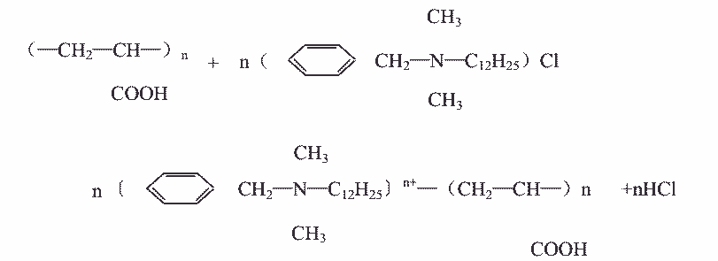

27.聚丙烯酸的测定——比色法
本方法适用于循环冷却水中聚丙烯酸含量的测定。范围 1～9mg/L。
1．原理
聚丙烯酸的阴离子与洁尔灭的阳离子作用，能定量地生成离子缔合物沉淀，以引用比
浊法来测定水中微量聚丙烯酸的含量。其反应式如下：

2．试剂
2．1 聚丙烯酸（基准试剂）含量 99%。
2．2 洁尔灭（十二烷基二甲基苄基氯化铵）化学纯试剂。
2．3 0.5mol/L 硫酸溶液。
2．4 0.5mol/L 氢氧化钠溶液。
2．5 0.01mol/L 乙二胺四乙酸二钠溶液。
2．6 3%柠檬酸三钠溶液。
2．7 0.2%洁尔灭溶液。
2．8 聚丙烯酸标准溶液。
2．8．1 贮备溶液：称取纯聚丙烯酸 0.1000g，用水溶解并转移到 100mL 容量瓶
中，用水稀释至刻度，摇匀，此溶液 1mL 含 1mg 聚丙烯酸。
2．8．2 标准溶液：准确吸取 5mL 贮备溶液于 500mL 容量瓶中，用水稀释至刻度，
摇匀，此溶液 1mL 含 0.01mg 聚丙烯酸。
3.仪器
3．1 分光光度计。
3．2 比色管：25mL，带塞。
4．分析步骤
4．1 标准曲线的绘制
分别吸取 1mL 含 0.01mg 聚丙烯酸的标准溶液 0，1，3，5，7，9mL 于 6 支 25mL 比色管
中，用水稀释至 10mL，向各比色管加入 0.01mol/L EDTA 溶液 1mL，3%柠檬酸三钠溶液 7mL，
0.2%洁尔灭溶液 3mL，用水稀释至刻度，摇匀，静置 10 分钟，于 420nm 处，用 3cm 比色皿，
以试剂空白作参比，测其吸光度，以吸光度为纵坐标，聚丙烯酸毫克数为横坐标绘制标准
曲线。
4．2 水样的测定
4．2．1 不含聚磷酸盐的测定
准确吸取经慢速滤纸干过滤的水样 10mL 于 25mL 比色管中，然后加入 0.01mol/L EDTA
溶液 1mL，3%柠檬酸三钠溶液 7mL，0.2%洁尔灭溶液 3mL，用水稀释至刻度，摇匀，静置 10
分钟，于 420nm 处，用 3cm 比色皿，以试剂空白作参比，测其吸光度。
4．2．2 含聚磷酸盐的测定
准确吸取经慢速滤纸干过滤的水样 10mL 于 25mL 比色管中，然后加入 0.5moL/L 硫酸溶
液 1mL，摇匀，置于煮沸的水浴中加热 10 分钟，取下冷却，加入 0.01mol/L EDTA 溶液 1mL，
0.5mol/L 氢氧化钠溶液 2mL，摇匀，加入 3%柠檬酸三钠溶液 7mL，0.2%洁尔灭溶液 3mL，用
水稀释至刻度，摇匀，静置 10 分钟，于 420nm 处，用 3cm 比色皿，以试剂空白作参比，测
其吸光度。
5．分析结果的计算
水样中聚丙烯酸含量 X（毫克/升）， 按下式计算：
式中：A——从标准曲线上查得聚丙烯酸含量，毫克；
VW——水样体积，毫升。